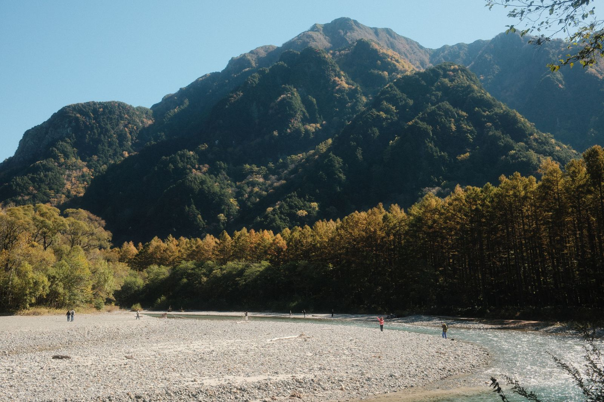

경기도 동두천 · 경기의 소금강 · 100대 명산 · 해발 587m
일주문에서 자재암을 거쳐 하백운대·중백운대에 오른 뒤 선녀탕 계곡으로 되돌아오는 원점회귀 코스입니다. 계곡을 따라 걷는 구간이 많아 여름에도 시원하고, 가을 단풍이 특히 아름답습니다. 등산 초보자·어린이·어르신 모두 부담 없이 즐길 수 있는 소요산의 대표 입문 코스입니다.
소요산역 1번 출구 → 평화로를 따라 북쪽으로 직진 → 소요산 관광지 안내센터 → 일주문 통과. 아스팔트·포장도로로 유모차도 가능. 좌우로 식당가와 기념품 가게가 늘어서 있음.
일주문 통과 후 계곡을 따라 걷는 평탄한 산길. 원효폭포·현충폭포 관람 가능. 자재암은 신라 원효대사가 창건한 고찰로 경내 산신각·삼성각 참배 후 잠시 쉬어가기 좋음.
자재암 뒤 108계단부터 본격 산길 시작. 돌계단과 암반 구간이 이어짐. 하백운대(約350m)에서 계곡과 소요산 입구 방향 조망이 열림.
하백운대에서 능선을 따라 완만하게 중백운대(約430m)까지. 초급 코스의 최고 지점. 소요산 계곡 방향 전경이 시원하게 펼쳐짐. 기념 사진 포인트.
선녀탕 하산로는 계곡 옆 비탈길 — 가파르고 낙엽에 미끄러울 수 있음. 선녀탕(자연 소(沼)) 잠시 감상 후 자재암으로 복귀, 원점 하산.
| # | 지점명 | 고도 | 누적거리 | 시설 |
|---|---|---|---|---|
| P | 소요산역 (출발) | 80m | 0km | 🚇 전철 1호선 |
| 1 | 매표소·일주문 | 95m | 1.0km | 🚻 화장실 · 🅿 주차 |
| 2 | 백운암 | 130m | 1.5km | — |
| 3 | 자재암 | 180m | 1.8km | 🚻 화장실 · 🍵 약수 |
| 4 | 하백운대 | 350m | 2.45km | 🪑 벤치 |
| 5 | 중백운대 ★초급정상 | 430m | 2.85km | 📸 전망 |
| 6 | 선녀탕 | 250m | 3.5km | 💧 계곡 |
| 7 | 자재암 (복귀) | 180m | 4.3km | 🚻 |
| P | 일주문 · 매표소 | 95m | 5.7km | 🚻 · 🍽 식당가 |
| 수단 | 경로 |
|---|---|
| 전철 | 1호선 소요산역 1번출구 |
| 버스 | 36번(수유역), 39번(도봉산역), 53번(전곡-덕정) |
| 승용차 | 3호선 소요산IC → 소요산 사거리 우회전 |
일주문 → 자재암 → 하·중·상백운대 → 칼바위 → 선녀탕으로 하산하는 원점회귀 코스(약 6.5km, 2~3시간). 소요산의 백미인 칼바위 능선 암릉을 경험할 수 있는 코스로, 하백·중·상백운대를 모두 밟고 칼바위의 짜릿한 조망을 즐길 수 있습니다. 단, 칼바위 구간은 아찔한 암릉이므로 등산화와 장갑은 필수입니다.
초급 코스와 동일. 소요산역 1번출구 → 평화로 직진 → 매표소 → 일주문 → 원효폭포 → 자재암. 자재암에서 화장실·약수 이용 후 출발 준비.
108계단 이후 암반·돌계단 급경사가 이어짐. 하·중·상 3개 백운대를 순서대로 오르며 각 지점에서 전망 포인트를 즐김. 상백운대(500m)는 소요산 서쪽 능선이 한눈에.
소요산 최고의 하이라이트 구간. 날카로운 암릉 칼바위를 로프와 발 디딤으로 통과. 좌우로 아찔한 절벽이지만 로프 잘 설치되어 있어 침착하게 진행하면 안전. 동두천 시내와 포천 방향 360도 조망.
칼바위에서 선녀탕 방향으로 하산. 경사가 가파르고 낙엽·습기 시 미끄러움. 선녀탕 감상 후 자재암 복귀 → 일주문 → 주차장/소요산역.
| # | 지점명 | 고도 | 누적거리 | 시설/특이사항 |
|---|---|---|---|---|
| P | 소요산역 | 80m | 0km | 🚇 1호선 |
| 1 | 매표소·일주문 | 95m | 1.0km | 🅿 🚻 |
| 2 | 자재암 | 180m | 1.8km | 🚻 🍵 약수 |
| 3 | 하백운대 | 350m | 2.45km | 📸 조망 |
| 4 | 중백운대 | 430m | 2.85km | 📸 전망대 |
| 5 | 상백운대 ★ | 500m | 3.1km | 📸 절경 |
| 6 | 칼바위 ⚠ | 490m | 3.6km | 🧤 장갑필수·로프 |
| 7 | 선녀탕 분기점 | 300m | 4.0km | 💧 계곡 |
| P | 일주문 | 95m | 6.5km | 🚻 🍽 |
소요산의 모든 주요 봉우리를 한 번에 밟는 완전 일주 코스(약 8.1km, 4~5시간). 일주문 → 자재암 → 하·중·상백운대 → 칼바위 → 나한대 → 의상대(정상 587m) → 공주봉 → 구절터 → 일주문의 말굽형 순환 코스입니다. 산악투어·블랙야크 100대 명산 인증 코스로, 소요산의 모든 조망과 암릉을 경험할 수 있는 최고급 코스입니다.
일주문 → 원효폭포 → 자재암(화장실·약수) → 108계단 → 하백운대(350m) → 중백운대(430m) → 상백운대(500m). 본격 산행 시작. 각 백운대에서 잠시 호흡 고르며 조망 감상.
소요산 최고 난이도 구간. 칼바위 암릉 통과(로프 이용) 후 능선을 따라 나한대까지. 양쪽 절벽 조망이 압도적. 나한대에서 의상대 방향 전망이 탁 트임.
소요산 최고봉 의상대(587m). 원효대사와 함께 수행한 의상대사를 기려 붙인 이름. 정상에서 동두천·포천·연천 방향 파노라마. 블랙야크 100대 명산 인증 지점.
의상대 정상에서 동쪽 능선 따라 공주봉(526m) 방향으로. 요석공주와 원효대사 설화의 배경이 된 공주봉. 이후 구절터로 내려서며 계곡 옆 흙길 이어짐.
구절터에서 계곡 옆 완만한 흙길로 속리교 → 일주문 방향 하산. 평탄하고 넓어 피로한 무릎을 쉬게 할 수 있는 마무리 구간. 일주문 앞 식당가에서 막걸리·파전으로 마무리.
| # | 지점명 | 고도 | 누적거리 | 시설/특이사항 |
|---|---|---|---|---|
| P | 소요산역 출발 | 80m | 0km | 🚇 1호선 |
| 1 | 매표소·일주문 | 95m | 1.0km | 🅿 🚻 마지막 식당가 |
| 2 | 원효폭포 | 130m | 1.3km | 📸 폭포 |
| 3 | 자재암 ★물보충 | 180m | 1.8km | 🚻 🍵 약수(마지막 물 보급) |
| 4 | 108계단 시작 | 220m | 2.0km | ⚠ 본격 급경사 |
| 5 | 하백운대 | 350m | 2.45km | 📸 조망 |
| 6 | 중백운대 | 430m | 2.85km | 📸 |
| 7 | 상백운대 | 500m | 3.1km | 📸 절경 |
| 8 | 칼바위 ⚠ | 490m | 3.6km | 🧤 장갑필수·암릉 |
| 9 | 나한대 | 550m | 4.2km | 📸 중간 쉬터 |
| 10 | 의상대 ★정상 | 587m | 4.7km | 📸 100대명산 인증 |
| 11 | 공주봉 | 526m | 5.4km | 📸 전망바위 |
| 12 | 구절터 | 200m | 6.3km | 🏛 요석공주 전설지 |
| 13 | 속리교 | 120m | 7.1km | 💧 계곡 |
| P | 일주문 원점 회귀 | 95m | 8.1km | 🍽 식당가 · 🚻 |